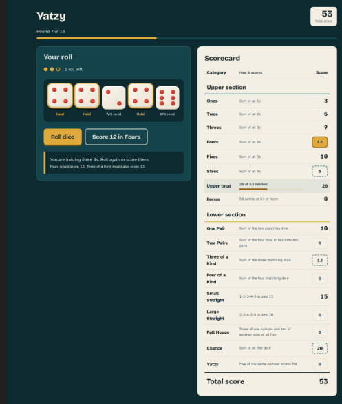
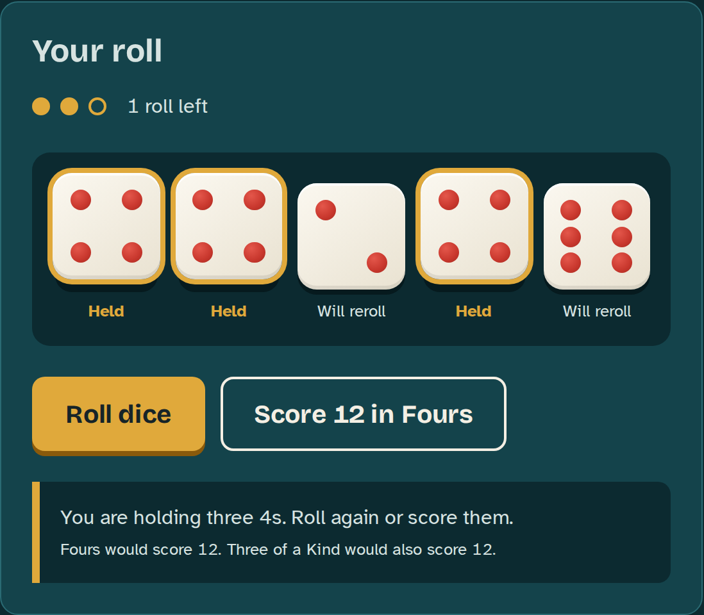
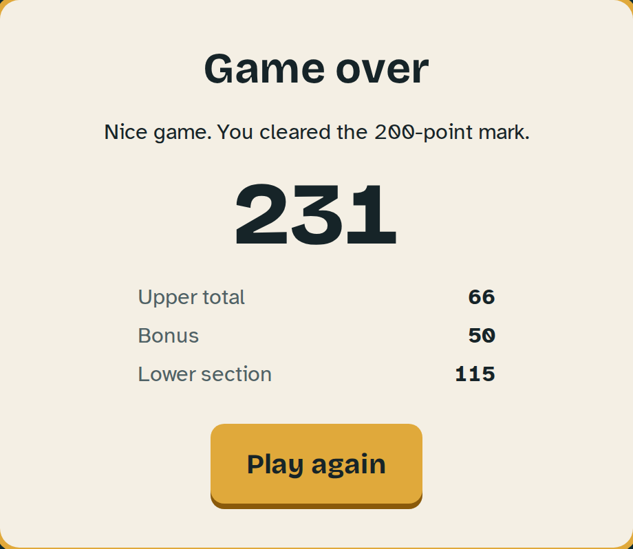

Assignment 1 (design and client) | Assignment 2 (Node.js server)
About the Project
A browser-based version of the dice game Yatzy. Players roll five dice up to three times a turn,
hold the ones they want and fill a 15-category scorecard. It was built in two stages: a designed,
client-only game (Assignment 1), then a version with a Node.js server (Assignment 2).
Assignment 1Assignment 2
Yatzy: from design system to client-server game
Assignment 1 produced the design system, dice design and HTML/CSS mock-ups, plus the game logic
in JavaScript. Assignment 2 moved that logic to an Express server so the server owns the game
state, rolls the dice and checks every rule. The browser only draws the interface and sends
the player's actions with the Fetch API.
HTML
CSS
JavaScript
jQuery
Node.js
Express
REST API
JSON
Fetch API
GitHub
Screenshots

Desktop: dice board and scorecard side by side.Phone: the same screen stacked in one column.

Board: held dice get a brass ring, and the hint box suggests what to score.

Game over: final score with upper total, bonus and lower section.
Key technologies used
Technologies in the Yatzy game and how each one was used
Technology
How I used it
jQuery
Loaded from a CDN with a Google CDN fallback. Its .animate() method spins the dice, and it handles DOM updates and events.
JSON & Fetch API
Every roll, hold and score is a request to the server. Bodies and replies are JSON.
Node.js & npm
Runs the server-side game logic and manages the Express dependency (npm install, npm start).
Express.js
Creates the server, serves the public/ client files and defines the RESTful API routes.
MVC-style separation
Game rules live in game/ (model), routes in server.js (controller) and the interface in public/ (view).
JavaScript DOM
The interface is redrawn from the server's state object after every action.
Async / await
Used with fetch so rolls and scoring never freeze the page while the server replies.
JavaScript & CSS animation
Dice tumble with small rotations, and they stop one by one, 150 ms apart. Reduced-motion users skip the animation.
VS Code & GitHub
VS Code for editing. GitHub for version control, with the work committed to my portfolio repository.
Architecture
Before: client only
The dice, scoring and game files ran in the browser, and state lived in JavaScript variables on the page.
After: client + server
The same files now run in Node. State lives in a Map on the server, one entry per game, and main.js calls the API with fetch.
assignment2/
├── server.js Express app + REST API routes
├── package.json dependencies and npm scripts
├── game/ game logic (server side)
│ ├── dice.js rolling and holding dice
│ ├── yatzy_engine.js scoring rules and score table
│ └── yatzy_game.js rounds, rolls per turn, game over, best score
└── public/ client, served statically by Express
├── index.html
├── style.css
└── main.js UI + Fetch API calls
REST API
POST is used for actions that are not repeatable (a roll gives new random dice every time).
PUT sets something to a known value, so repeating it is harmless.
GET only reads and DELETE removes a game.
Yatzy API endpoints
Method
Endpoint
Purpose
Success
POST
/api/games
Create a new game
201 + state
GET
/api/games/:id
Read current state
200 + state
POST
/api/games/:id/roll
Roll all dice that are not held
200 + state
PUT
/api/games/:id/dice/:index/hold
Hold or release die 0 to 4
200 + state
POST
/api/games/:id/score
Lock the current dice into a category
200 + state
PUT
/api/games/:id/restart
Restart, keeping the best score
200 + state
DELETE
/api/games/:id
Delete the game
204
Errors always return { "error": "message" } with a status code:
400 for a bad request, 404 when a game or route is not found,
and 409 when an action breaks a game rule, such as a fourth roll in one turn.
How a turn works
Press Roll dice. The client sends POST /roll and the server rolls all five dice.
Press dice to hold them. Each click sends PUT .../hold.
Roll again to reroll only the dice that are not held (up to three rolls per turn).
Pick a category on the scorecard. Its "would score" number comes from the server.
Press Score. The server locks the category and starts the next round.
After round 15 the game ends and shows the upper total, bonus, lower total and final score.
Game design system (Assignment 1)
The game has its own palette and fonts, separate from this portfolio.
Headings use Bricolage Grotesque for a playful feel. Body text and scores use
Atkinson Hyperlegible, which keeps letters and numbers easy to tell apart.
Lagoon 900#0C2A30
Lagoon 700#14434B
Lagoon 500#2A6A73
Bone#F4EFE4
Pip Red#C8372D
Brass#E0A93B
Highlights and challenges
Responsive design
Dice are 88 px on desktop and shrink to 56 px on a phone, using Flexbox and media queries.
Asynchronous operations
Rolls and scoring use async/await, and the buttons and scorecard lock while the dice spin so a second action cannot slip in.
Server-client interaction
The client holds no rules. Even the potential scores come from the server, so the two can never disagree.
Animation
The server rolls the real values first. The animation only decorates, then every die settles on the server's value.